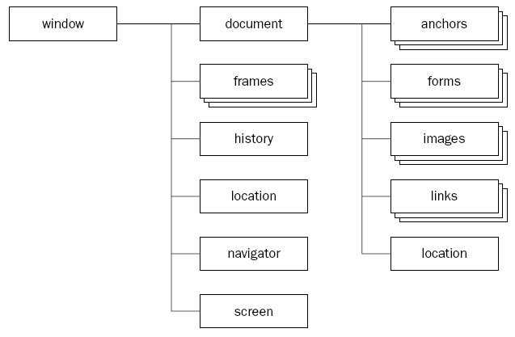

Propiedad Navigator del Objeto Window JavaScript
Contiene información sobre el navegador web. La implementación de este objeto varía entre navegadores (Chrome, Edge, IExplorer, FireFox, Opera, etc.)

Las propiedades comunes a estos navegadores son:
- appName : almacena el nombre oficial del navegador.
- appVersion : almacena la versión del navegador.
- cookieEnabled : almacena si las cookies están activas en el navegador.
- platform : almacena la plataforma donde el navegador se está ejecutando.
- plugins : almacena un array de los plugin cargados en el navegador.
Ejemplo:
Este pequeño programa muestra los valores de las propiedades antes anunciadas:
Resultado: